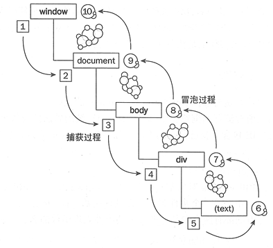

javascript-事件 events
浏览器中的 JavaScript 使用事件驱动的编程模型。 一切都始于事件。 本节介绍 JavaScript 事件以及事件处理的工作原理。
浏览器中的 JavaScript 使用事件驱动的编程模型。
一切都始于事件。
事件可能是 DOM 已加载，或者是异步请求完成，或用户单击元素或滚动页面，或用户按下键盘。
有很多不同类型的事件。
事件处理器（Event handlers）
你可以使用事件处理程序响应任何事件，事件处理程序只是在事件发生时调用的函数。
你可以为同一事件注册多个处理程序，并在事件发生时调用它们。
JavaScript 提供了三种注册事件处理程序的方法：
内联事件处理程序 inline
由于他自身的限制，这种类型的事件处理程序今天很少使用，但这是 JavaScript 早期的唯一方法：
HTML 代码:
1 | <a href='site.com' onclick='dosomething();'> |
DOM 事件处理器
当一个对象只有一个事件处理器时这种方法很常用，因为在这种情况下无法添加多个处理程序：
JavaScript 代码:
1 | window.onload = () => { |
它在处理XHR请求时最常用：
JavaScript 代码:
1 | const xhr = new XMLHttpRequest(); |
你可以使用 if ('onsomething' in window) {} 检查是否已将处理程序分配给某个属性。
使用 addEventListener()
这是 现代 方式。这种方法允许我们根据需求注册多个处理程序，你会发现它是绑定处理程序最受欢迎的方式：
JavaScript 代码:
1 | window.addEventListener('load', () => { |
注意：IE8 及以下版本不支持这个方法，可以使用
attachEvent() 代替。如果你需要支持旧浏览器，请记住这一点。
监听不同的元素
你可以监听 window 来拦截“全局”事件，比如键盘的使用，你也可以监听特定元素上发生的事件，比如鼠标点击了某个按钮。
这也是为什么 addEventListener 有时候在 window 上调用，有时间在某个 DOM 元素上。
Event 对象
事件处理器会获得一个 Event 对象作为第一个参数：
JavaScript 代码:
1 | const link = document.getElementById('my-link'); |
这个对象包含很多有用的属性和方法，比如：
target，事件发生的目标DOM元素type，事件类型stopPropagation()，调用以阻止DOM事件传播
其它属性提供给特定的事件，Event 只是不同事件的一个接口：
…等等
上面的每一个都链接到了 MDN 页面，你可以在那查看它们所有的属性。
例如，当一个键盘事件发生时，你可以检查哪个键被按下，通过 key 属性值得到一个可读格式的值（ Escape, Enter 等等）：
JavaScript 代码:
1 | window.addEventListener('keydown', (event) => { |
在鼠标事件中，我们可以检查按下了哪个鼠标按钮：
JavaScript 代码:
1 | const link = document.getElementById('my-link'); |
事件冒泡和事件捕捉
事件冒泡和事件捕捉是事件传播的两个模型。
假设你的 DOM 结构是这样的：
HTML 代码:
1 | <div id="container"> |
你希望跟踪用户何时单击该按钮，并且你有两个事件侦听器，一个在 button 上，另一个在 #container 上。 请记住，单击子元素将始终传播到其父元素，除非你停止事件传播（我们稍后会看到）。
这些事件侦听器会按照顺序调用，这个顺序通过事件冒泡/事件捕捉模型决定。
冒泡 意味着事件从被点击的元素（子元素）一直向上传播到所有祖先元素，从最近的一个开始。从子开始处理相应程序
在我们的例子中，点击 button 的话, button 上的处理器会在 #container 之前发生。
捕捉 恰恰相反：最外部的事件会在特定处理器之前发生，比如还是点击 button , 但先冒泡到最外层的 #container , #container上的事件处理先相应, 然后是 button 上的事件处理程序响应.
默认采用事件冒泡模型。从子开始处理
你也可以选择使用事件捕捉，通过将 addEventListener 的第三个参数设为 true：
JavaScript 代码:
1 | document.getElementById('container').addEventListener( |
注意：首先运行所有捕获事件处理程序。
然后是所有冒泡的事件处理程序。
这个顺序遵循这个原则：DOM 遍历从 Window 对象开始的所有元素，直到找到被点击的元素项。执行此操作时，调用与事件关联的任何事件处理程序（捕获阶段）。
一旦找到目标元素，它会重复这个过程直到回到 Window 对象，此时调用相应的事件处理器（冒泡阶段）。
这样图可以帮助你理解这个过程：
注意咯, 如果你设置了多个事件处理, 比如一个
window上设置了 2 个 一个用 冒泡, 一个用 捕获, 那么 都会触发的, 然后触发顺序是 下面的 1 2 3 4 先 处理 捕获的 在处理 冒泡 的事件处理程序

停止传播
DOM 元素上的事件将传播到其所有父元素上，除非手动停止传播：
HTML 代码:
1 | <html> |
a 上的 click 事件会传播到 section 然后是 body 。
你可以调用 Event 的 stopPropagation() 方法来停止事件传播，通常放在事件处理程序的末尾（注：我个人喜好放在事件处理程序的开始处）：
JavaScript 代码:
1 | const link = document.getElementById('my-link'); |
常见事件
以下可能是你会处理的最常见事件的列表。
load
页面加载完成后，在 window 和 body 元素上触发 load 事件。
鼠标事件
单击鼠标按钮时 click 事件触发。 单击鼠标两次时触发 dbclick 事件。 当然，在这种情况下，click 事件会在此事件之前触发。mousedown，mousemove 和 mouseup 可以和拖动事件结合在一起。小心使用 mousemove，因为它会在鼠标移动过程中触发很多次（稍后会看到节流）。
键盘事件
当按下键盘键时 keydown 事件就会触发(当按下按钮时，任何时候重复键)。当键被释放时，将触发 keyup 事件。
滚动(Scroll)
每次滚动页面时都会在 window 上触发 scroll 事件。在事件处理程序中，你可以通过检查 window.scrollY（Y 轴）(注：我个人喜好用 document.documentElement.scrollTop) 来检查当前的滚动位置。
请记住，此事件不是一次性的事件。它在滚动期间会发生很多次，而不仅仅是在滚动的结尾或开始时，所以不要在处理程序中进行任何频繁的计算或操作 – 而是使用节流代替。
节流(Throttling)
如上所述，mousemove 和 scroll 这两个事件都不是一次性事件，而是在持续操作的时间内连续调用它们的事件处理函数。
这是因为它们提供坐标，因此你可以跟踪正在发生的事件。
如果你在这些事件处理器中进行复杂的操作，则会影响性能并导致站点用户体验不佳。
像 Lodash throttle 这样的库提供了 100 行代码实现的节流函数来处理这个问题。一个简单易懂的实现是使用 setTimeout 每隔 100ms 缓存一次滚动事件：
JavaScript 代码:
1 | let cached = null; |
两者区别
理解 Debouncing 与 Throttling 的区别 666
白话 debounce 和 throttle
debounce 的主要区别是 推迟这次调用。 电梯例子
throttle 保证方法每 Xms 有规律的执行,
- debounce：把触发非常频繁的事件合并成一次执行
- throttle：设置一个阀值，在阀值内，把触发的事件合并成一次执行；当到达阀值，必定执行一次事件
了解了 throttle 和 debounce 之后，下面看看他们的常用场景：
debounce
- 对于键盘事件，当用户输入比较频繁的时候，可以通过 debounce 合并键盘事件处理
- 对于
ajax请求的情况，例如当页面下拉超过一定返回就通过ajax请求新的页面内容，这时候可以通过 debounce 合并 ajax 请求事件
throttle
- 对于键盘事件，当用户输入非常频繁，但是我们又必须要在一定时间内（阀值）内执行处理函数的时候，就可以使用 throttle
- 例如，一些网页游戏的键盘事件
- 对于鼠标移动和窗口滚动，鼠标的移动和窗口的滚动会带来大量的事件，但是在一段时间内又必须看到页面的效果
- 例如对于可以拖动的 div，如果使用 debounce，那么 div 会在拖动停止后一下子跳到目标位置；这时就需要使用 throttle